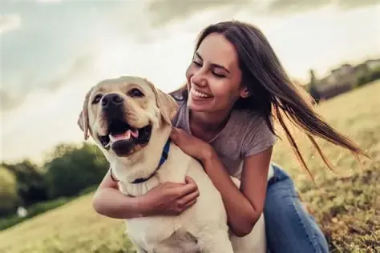
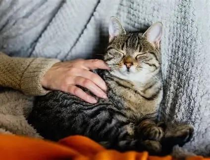
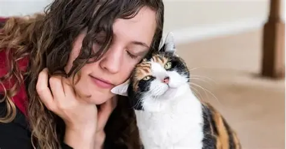

Angeles del Cielo Oaxaca
Success Stories
Here you can read some of the success stories of our animals that have found loving homes. Each story represents a journey of hope, resilience, and the power of compassion.

Story 1: Max's Journey
Max was found wandering the streets of Oaxaca, malnourished and scared. Our team took him in, provided medical care, and worked tirelessly to find him a forever home. Today, Max is a happy, healthy dog who has been adopted by a loving family.

Story 2: Luna's New Beginning
Luna, a beautiful cat, was rescued from an abusive situation. After months of rehabilitation and care, she was adopted by a family who adores her. Luna's story is a testament to the resilience of animals and the impact of kindness.
Story 3: Charlie's Second Chance
Charlie was found abandoned in the countryside, suffering from injuries and illness. Our medical team treated him, and he eventually recovered. Charlie was adopted by a family who appreciates his playful nature.

Story 4: Bella's Transformation
Bella was found neglected and malnourished in a remote area. Our team provided her with comprehensive care, and she gradually transformed into a loving and social companion. Bella was adopted by a family who cherishes her unique personality.